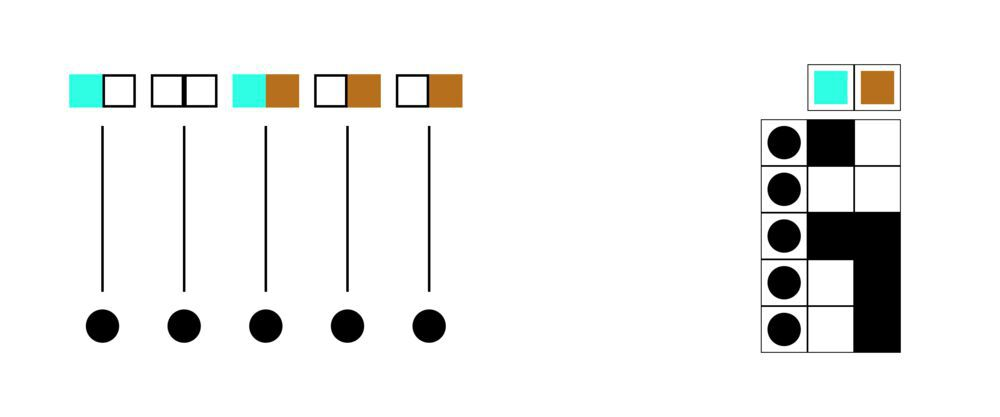
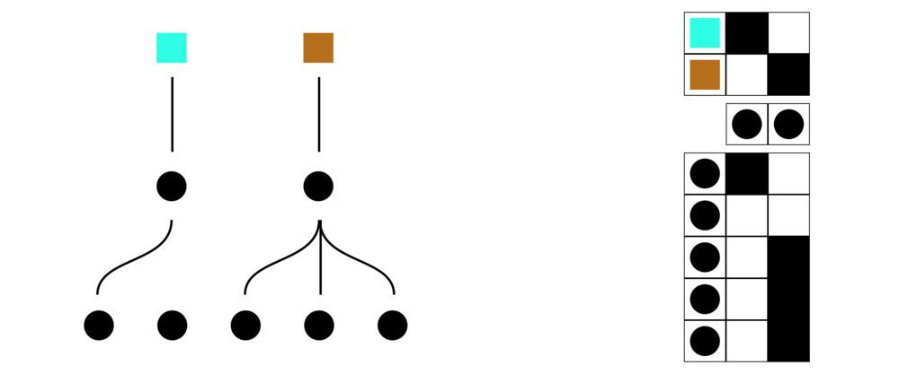
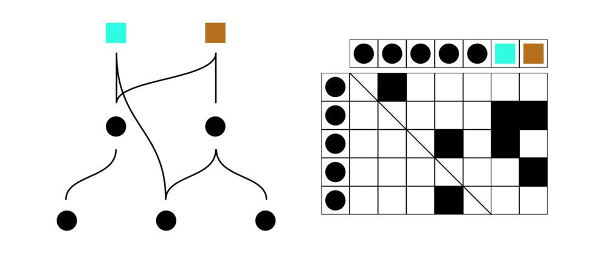

Liquid Democracy
1 The third ’Democracy’
1.1 Current known democratic processes
1.1.1 Direct Democracy
people vote for policies directly. This type of democracy only works when each of the members are informed and can estimate the impact of each policy.

similar but different Approval Voting
1.1.2 Representative Democracy
you choose a representative (usually someone) to decide for you. Cuts costs for informed concent, but trades off control.

1.2 different democracies and their flaws
From the eyes of Aristotle, every form of democracies has their own short commings. To him, it’s rather unsmart to pick and impose which one is the best, but to analyze and what are the possible alternatives that best suits for the community is far more important. yamcha2010saikyo
https://www.thoughtco.com/aristotle-on-democracy-111992
飲茶. 史上最強の哲学入門 (Japanese Edition) (Kindle Locations 1497-1499).
1.3 Liquid Democracy
Democracy that you can vote for both policies and people malone2018superminds.

1.3.1 Example1: Deciding Breakfast
As a family we need to decide what to have for breakfast. The options are Rice or Bread.
- Minori put 0.1 points to Yasushi and Ray to deicide, and voted directy 0.1 and 0.7 points respectively to Rice and Bread.
- Yasushi voted 0.2 points to Minori and 0.3 points to Ray. He gave half of his vote to Rice.
- Ray gave 0.4 points to her parents and gave the remainder for eating Bread.
some points to consider
- Minori contradics. She is giving 0.1 points to rice while giving it 0.7 to bread.
- Yasushi is the only one directly voting for Rice
- Ray has limited knowledge and may not know how Rice tastes.
- Voting matrix
The Voting Matrix (\(V\)) will be:
| - | Minori | Yasushi | Ray | * Rice | * Bread |
| Minori | 0.0 | 0.2 | 0.4 | 0.0 | 0.0 |
| Yasushi | 0.1 | 0.0 | 0.4 | 0.0 | 0.0 |
| Ray | 0.1 | 0.3 | 0.0 | 0.0 | 0.0 |
| * Rice | 0.1 | 0.5 | 0.0 | 1.0 | 0.0 |
| * Bread | 0.7 | 0.0 | 0.2 | 0.0 | 1.0 |
\[ \ \begin{bmatrix} \ 0.0 & 0.2 & 0.4 & 0.0 & 0.0 \\ \ 0.1 & 0.0 & 0.4 & 0.0 & 0.0 \\ \ 0.1 & 0.3 & 0.0 & 0.0 & 0.0 \\ \ 0.1 & 0.5 & 0.0 & 1.0 & 0.0 \\ \ 0.7 & 0.0 & 0.2 & 0.0 & 1.0 \ \end{bmatrix} \]
- results:
| Plan | Votes |
| Rice | 1.1725 |
| fread | 1.8275 |
so we have bread this morning.
- influences:
| Representative | influence |
| Minori | 11.0 |
| Yasushi | 4.625 |
| Ray | 3.5 |
Minori has the most influence for deciding breakfast.
1.4 Math
based on suzuki2013nameteki ref pp 141-148
\begin{bmatrix} \ v_{11} & v_{12} & v_{13} & \cdots & v_{1n} & 0 & 0 & 0 & \cdots & 0 \\ \ v_{21} & v_{22} & v_{23} & \cdots & v_{2n} & 0 & 0 & 0 & \cdots & 0 \\ \ v_{31} & v_{32} & v_{33} & \cdots & v_{3n} & 0 & 0 & 0 & \cdots & 0 \\ \ \vdots & \vdots & \vdots & \ddots & \vdots & \vdots & \vdots & \vdots & \ddots & \vdots \\ \ v_{n1} & v_{n2} & v_{n3} & \cdots & v_{nn} & 0 & 0 & 0 & \cdots & 0 \\ \ v_{(n+1)1} & v_{(n+1)2} & v_{(n+1)3} & \cdots & v_{(n+1)n} & 1 & 0 & 0 & \cdots & 0 \\ \ v_{(n+2)1} & v_{(n+2)2} & v_{(n+2)3} & \cdots & v_{(n+2)n} & 0 & 1 & 0 & \cdots & 0 \\ \ v_{(n+3)1} & v_{(n+3)2} & v_{(n+3)3} & \cdots & v_{(n+3)n} & 0 & 0 & 1 & \cdots & \vdots \\ \ \vdots & \vdots & \vdots & \ddots & \vdots & \vdots & \vdots & \vdots & \ddots & 0 \\ \ v_{(n+m)1} & v_{(n+m)2} & v_{(n+m)3} & \cdots & v_{(n+m)n} & 0 & 0 & \cdots & 0 & 1 \\ \end{bmatrix}\[ \ A_{t+1} = VA_t \]
where the \(V\) is the voting matrix and \(A_0\) is \(I\). when \(A'\) is the result with enough recusive operations that convergeses, the vote result is.
\[ a_i=\sum_{j=1}^{M} A'_{ij} \; \textrm{for all} \; i \]
the infulence of each member can be calculated by:
\[ \frac{\sum_{j=1}^{H} \sum_{t=0}^{\infty} A_{ij}(t)}{\sum_{t=0}^{\infty} A_{ii}(t)} \; \textrm{for all} \; 1 \leq i \leq H \]
2 code
use std::collections::BTreeMap; fn main(){ let }
3 let’s try it out
Bibliography
- [yamcha2010saikyo] "飲茶 & 板垣, 史上最強の哲学入門, マガジン・マガジン (2010).
- [malone2018superminds] Malone, Superminds: The surprising power of people and computers thinking together, Little, Brown Spark (2018).
- [suzuki2013nameteki] Suzuki, なめらかな社会とその敵: PICSY\textperiodcentered 分人民主 主義\textperiodcentered 構成的社会契約論, 勁草書房 (2013).